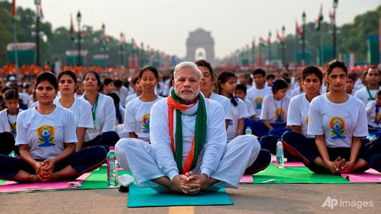

YOGA
Pranayama (Breathng Exercises)
Kapalabhathi (cleansing, breathing exercise)
Anuloma Viloma (alternate nostril breathing)
Kapalabhathi (pumping exercise)
THE PRACTICE
Sit in a steady, comfortable, cross-legged position with the spine
straight.
Both hands in chin mudra (index finger to the thumb) on your
knees.
Take a few deep breaths. Then, quickly contract the abdominal
muscles pulling the abdomen in sharply, exhaling through the nose.
The inhale is passive, while the exhale is active.
Do about 20-30 pumpings to start, then gradually build up to 50-
- 100 pumpings over time.
After the pumping, take a deep inhale and retain the breath.
Concentrate the mind, keep the shoulders relaxed and back straight,
visualizing one single point. Hold the breath comfortably as long as
you can, and then exhale slowly. (This is one round)
Practice at least three rounds of Kapalabhati, then follow with
Anuloma Viloma (alternate nostril breathing practice.)
note:- please practice these breathing exercises once you have been
introduced to pranayama by a qualified teacher. If you have any questions,
or doubts please consult your instructor.

Anuloma Viloma (alternate nostril breathing)
THE PRACTICE
Sit in a steady, comfortable, cross-legged position with the spine
straight.
Left hand in chin mudra (index finger to the thumb) on left knee.
Right hand in Vishnu mudra (index and middle finger bent, ring
finger and little finger used to close left nostril, thumb used to close
the right)
Take a few deep breaths. After exhaling, close right nostril with
right thumb, and proceed with the ratio 1:4:2 (example: inhale left
4, retain 16, exhale right 8, inhale right 4, retain 16, exhale left 8)
One round starts on the left (always) and ends on the left.
Practice comfortable retention, while focusing on one single point,
for 10-20 rounds as comfort and time permits.

note: please practice these breathing exercises once you have been
introduced to pranayama by a qualified teacher. If you have any questions,
or doubts please consult your instructor.
"Pranayama is one of the most important practices in all forms of Yoga. By practicing pranayama, the Yogi is
able to control the nervous system and thereby obtains gradual control over prana or vital energy and the
mind...Yogic teachings further show, that through pranayama man’s will power, self-control, concentration
power, moral qualifications, and even his spiritual evolution can be increased [through the proper practice of
pranayama.]"
-Swami Vishnudevananda (in his book The Complete Illustrated Book of Yoga)
read 2013- Beginners Yoga Packet
read YogaLife2010
read YOGA_Manual